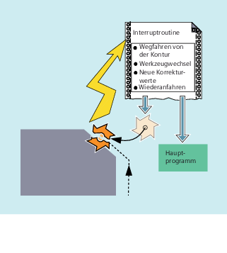

| Hinweis |
|
Die in der folgenden Beschreibung abwechselnd vorkommenden Begriffe "Asynchrones Unterprogramm (ASUP)" und "Interruptroutine" kennzeichnen die gleiche Funktionalität. |
Die Funktion einer Interruptroutine soll anhand eines typischen Beispiels verdeutlicht werden:
Während der Bearbeitung bricht das Werkzeug. Hierdurch wird ein Signal ausgelöst, das den laufenden Bearbeitungsablauf stoppt und gleichzeitig ein Unterprogramm – die so genannte Interruptroutine – startet. In diesem Unterprogramm stehen alle Anweisungen, die in diesem Fall ausgeführt werden sollen.
Ist das Unterprogramm abgearbeitet (und hierdurch die Betriebsbereitschaft hergestellt), springt die Steuerung in das Hauptprogramm zurück und setzt die Bearbeitung – je nach REPOS-Befehl – an der Unterbrechungsstelle fort (siehe "Wiederanfahren an Kontur").
 | Vorsicht |
KollisionsgefahrWenn im Unterprogramm kein REPOS-Befehl programmiert ist, dann wird auf den Endpunkt des Satzes positioniert, der auf den unterbrochenen Satz folgt. |